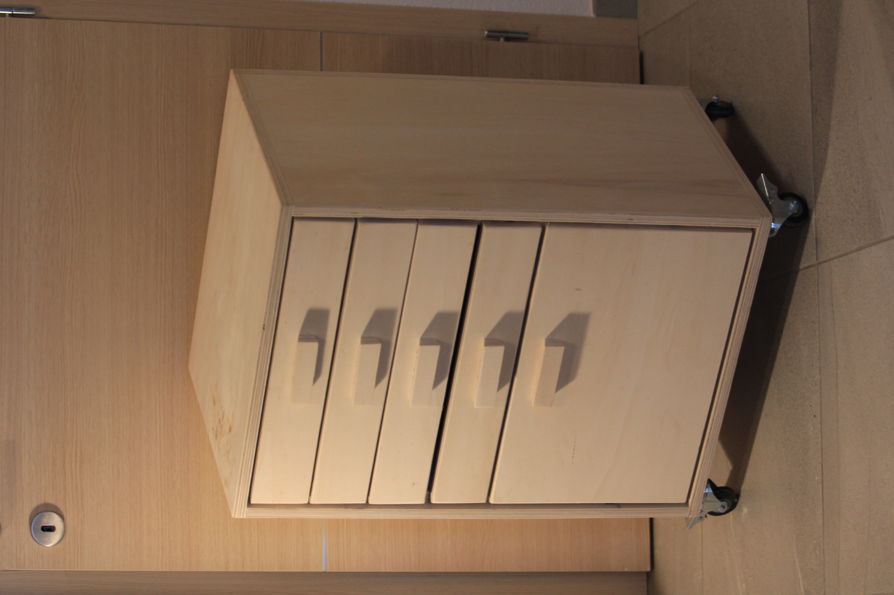

Vos aussi un meuble à tiroir sur roulette.
Il s'agit d'un meuble entièrement réalisé en contreplaqué. Les tiroirs ont été fait par moi-même, sans hardware sauf pour le plus grand. Et le grand tiroir est un tiroir pour porte, revue, range d'ocuments qui est très pratique pour l'administratif.
Je suis d'abord parti de morceaux de bois carré. Je les ai assemblés pour faire la forme globale. Et ensuite je les ai arrondis à l'aide d'une défonseuse d'abord, puis d'une ponceuse principalement.
Voilà, j'ai plus rien à dire sur ce projet, en fait je l'ai réalisé il y a longtemps pour mon papa et voilà.
